長期トレンド
JKMとJEPXシステムプライスの推移グラフ
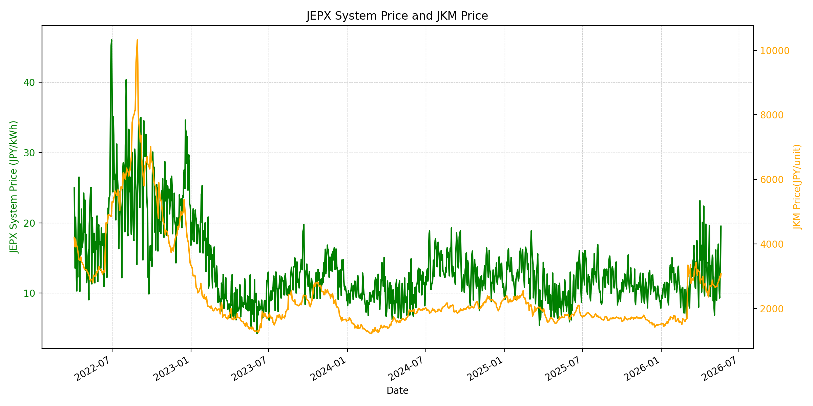
WTIの推移グラフ
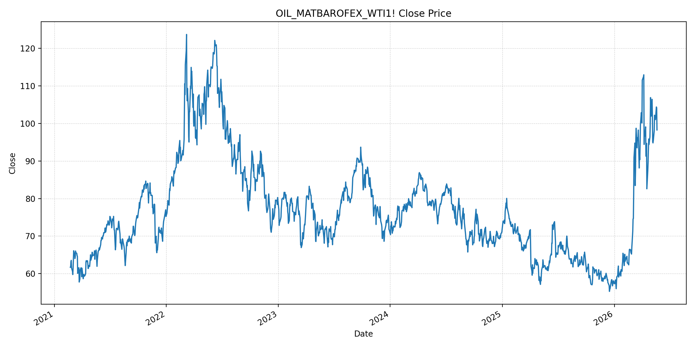
JEPXエリアプライスグラフ（直近一年分）
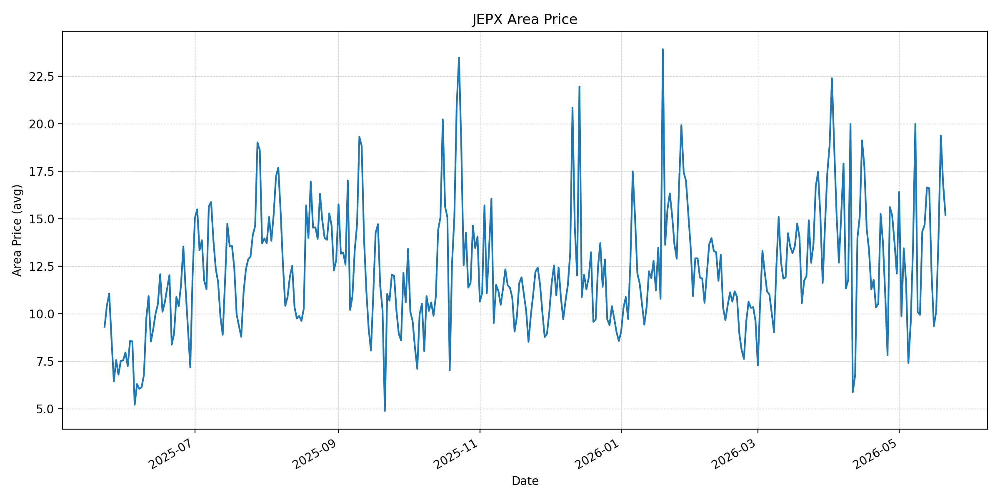
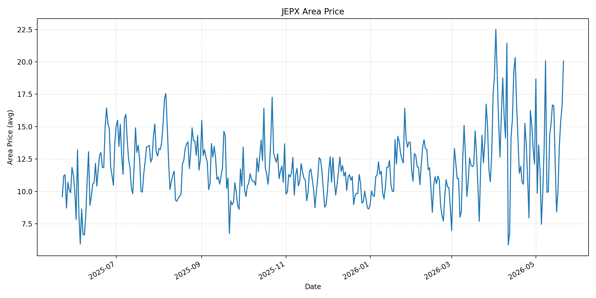
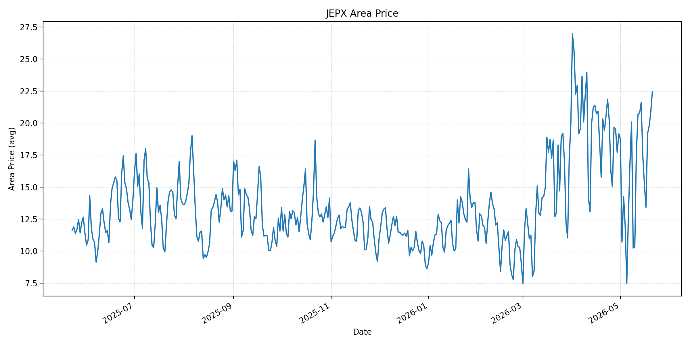
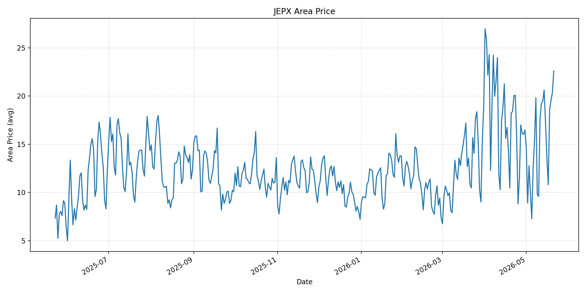
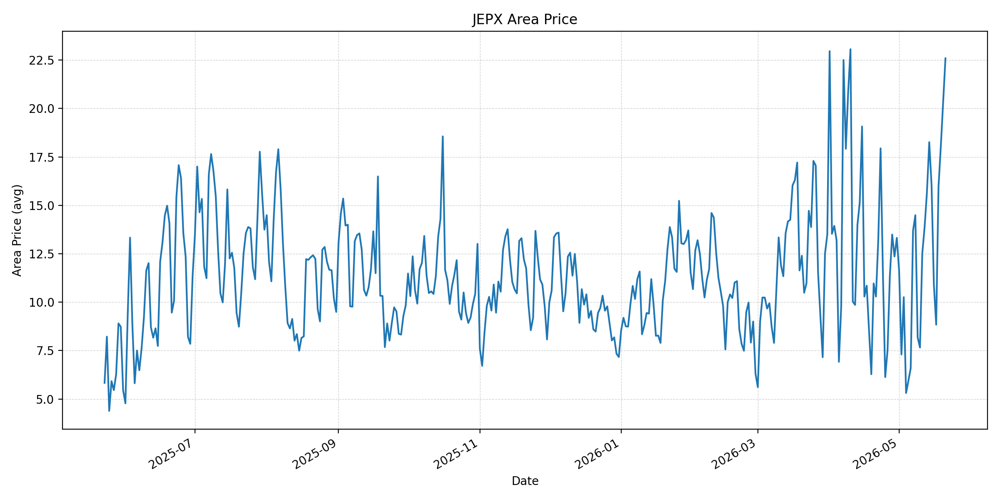
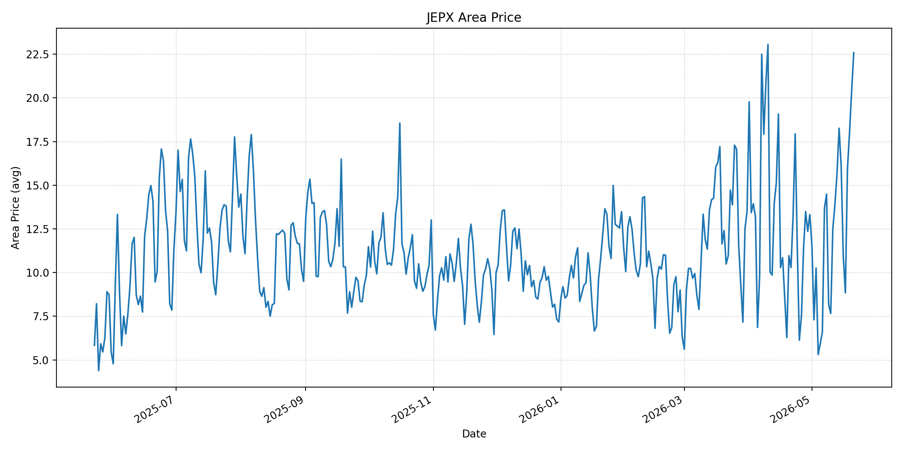
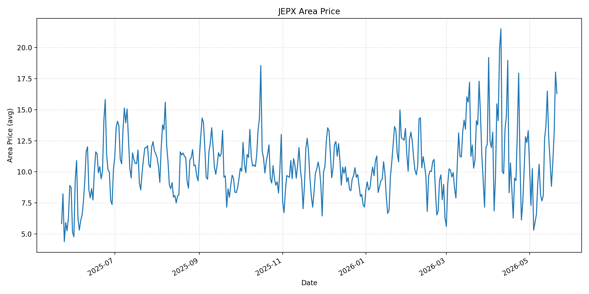
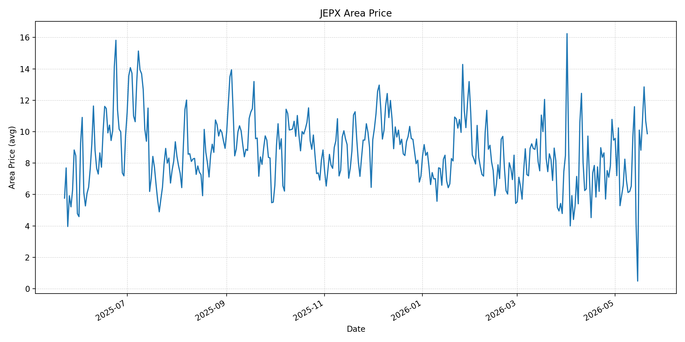
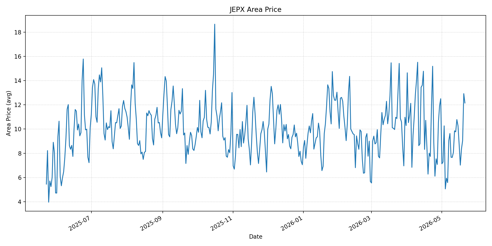
短期トレンド
JKMとJEPXシステムプライスの推移グラフ
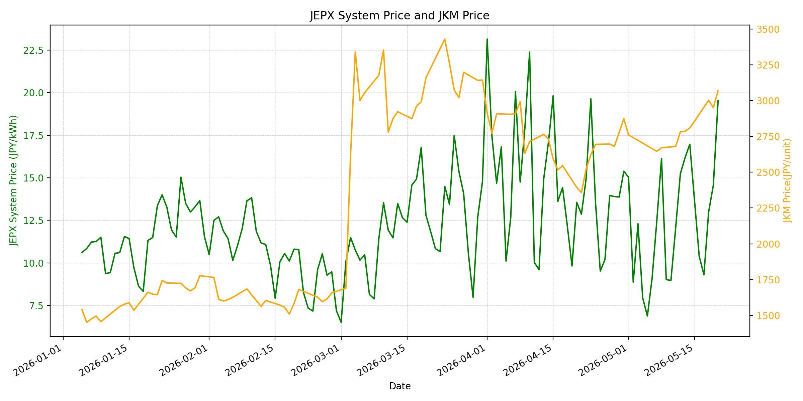
WTIの推移グラフ
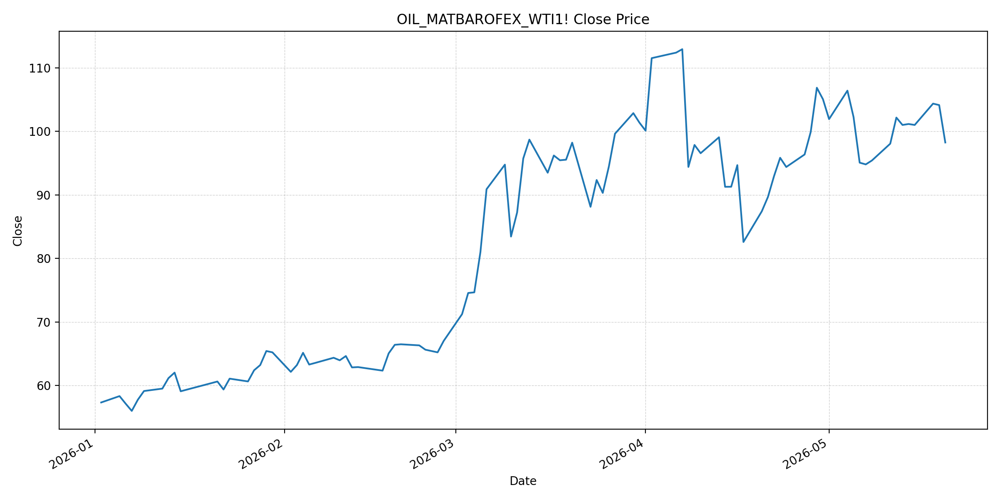
JEPXシステムプライス
JEPXは受渡日ベースの最新非空値で評価しています。最新値は 2026-05-21 分です。先週終値は 2026-05-14 時点の直近値、先月終値は 2026-04-30 時点の直近値で評価しています。
| エリア | 当日価格 | 前日価格 | 前日比（％） | 先週終値 | 先週比（％） | 先月終値 | 先月比（％） | 過去最高値 | 最高値比（％） |
|---|---|---|---|---|---|---|---|---|---|
| システム | 20.42 | 19.52 | 4.61 | 16.97 | 20.33 | 15.39 | 32.68 | 64.06 | -68.13 |
| 北海道 | 15.18 | 16.82 | -9.75 | 16.6 | -8.55 | 12.11 | 25.35 | 73.92 | -79.46 |
| 東北 | 20.06 | 16.6 | 20.84 | 16.58 | 20.99 | 12.11 | 65.65 | 84.92 | -76.38 |
| 東京 | 22.47 | 20.86 | 7.72 | 21.59 | 4.08 | 19.16 | 17.28 | 86.13 | -73.91 |
| 中部 | 22.59 | 20.33 | 11.12 | 20.61 | 9.61 | 16.47 | 37.16 | 52.06 | -56.61 |
| 北陸 | 22.59 | 20.33 | 11.12 | 18.26 | 23.71 | 13.32 | 69.59 | 46.48 | -51.4 |
| 関西 | 22.59 | 20.4 | 10.74 | 18.26 | 23.71 | 13.32 | 69.59 | 46.48 | -51.4 |
| 中国 | 16.3 | 18.03 | -9.6 | 16.5 | -1.21 | 13.32 | 22.37 | 46.48 | -64.93 |
| 四国 | 9.87 | 10.69 | -7.67 | 4.17 | 136.69 | 9.46 | 4.33 | 46.48 | -78.77 |
| 九州 | 12.15 | 12.92 | -5.96 | 10.78 | 12.71 | 12.5 | -2.8 | 40.54 | -70.03 |
LNG先物価格
最新値は 2026-05-20 の LNG(close) です。先週終値は 2026-05-13 時点の直近値、先月終値は 2026-04-30 時点の直近値で評価しています。
| 当日価格 | 前日価格 | 前日比（％） | 先週終値 | 先週比（％） | 先月終値 | 先月比（％） | 過去最高値 | 最高値比（％） |
|---|---|---|---|---|---|---|---|---|
| 3070 | 2951 | 4.03 | 2786 | 10.19 | 2874 | 6.82 | 10319 | -70.25 |
石油先物価格
最新値は 2026-05-20 の OIL(close) です。先週終値は 2026-05-13 時点の直近値、先月終値は 2026-04-30 時点の直近値で評価しています。
| 当日価格 | 前日価格 | 前日比（％） | 先週終値 | 先週比（％） | 先月終値 | 先月比（％） | 過去最高値 | 最高値比（％） |
|---|---|---|---|---|---|---|---|---|
| 98.26 | 104.15 | -5.66 | 101.02 | -2.73 | 105.07 | -6.48 | 123.7 | -20.57 |
ニュース
イラン情勢に関するニュース
- 2026年5月20日、TBSは、トランプ米大統領がイランへの「大きな打撃」を再び示唆し、数日は待つと述べたと報じました。協議余地を残しつつも軍事圧力は残り、停戦と再攻撃リスクが並存しています。 参照: TBS CROSS DIG with Bloomberg, 2026-05-20
- 2026年5月19日、TBSは、イラン最大の石油輸出拠点カーグ島で少なくとも10日間連続して大型外航タンカーが確認されていないと報じました。イラン側の輸出収入と在庫運用への圧力は継続しています。 参照: TBS CROSS DIG with Bloomberg, 2026-05-19
ホルムズ海峡経由の石油・LNGに関するニュース
- 2026年5月19日、TBSは、戦争開始後にホルムズ海峡へ入ったイラン関連以外の大型タンカーのほぼ全てが積み荷を載せて湾外へ出たと報じました。一方、紛争前から湾内にいる約100隻はなお足止めされ、通航正常化は限定的です。 参照: TBS CROSS DIG with Bloomberg, 2026-05-19
- 2026年5月18日、テレビ朝日は、ホルムズ海峡の事実上封鎖後に同海峡を通過した中東産LNGタンカーが東京湾に到着したと報じました。JERAの千葉県の火力発電所へ向かう見込みで、日本向けLNGには一部正常化の兆しがあります。 参照: テレビ朝日, 2026-05-18
ホルムズ海峡経由でない石油・LNGに関するニュース
- 2026年5月20日、LOGISTICS TODAYは、日韓首脳が原油・石油製品・LNGの相互融通を含むエネルギー安全保障協力を具体化することで一致したと報じました。対象品目、融通量、輸送ルート、参加事業者は未確定ですが、非ホルムズ調達網の補完策になります。 参照: LOGISTICS TODAY, 2026-05-20
- 2026年5月18日、JOGMECは、ホルムズ制約によりLNGタンカーの航行日数が増え、アジア向け米国産LNGの需要や価格に影響が出ていると整理しました。非ホルムズ調達を増やしても、輸送費と船腹制約の影響は残ります。 参照: JOGMEC, 2026-05-18
日本国内のイラン戦争に関係するニュース
- 2026年5月20日、G7財務相・中央銀行総裁会議は、中東情勢が世界経済の下押し圧力やインフレリスクになっており、ホルムズ海峡の開放と紛争解決が不可欠だとする共同声明を採択しました。日本からは片山財務相と植田日銀総裁が出席しています。 参照: TBS CROSS DIG with Bloomberg, 2026-05-20
- 2026年5月20日、日韓のエネルギー安全保障協力は、LNGではJERAと韓国ガス公社の運用最適化MOUを土台に協議を深める方針です。JEPX制度への直接発表は確認できませんが、燃料調達と火力運用を通じて国内電力コストに影響します。 参照: LOGISTICS TODAY, 2026-05-20
インサイト
ニュース事項による日本の電力市場への影響（短期：数日〜1週間）
- JEPXシステムプライスは 20.42 円/kWhで前日比 4.61%、先週比 20.33%、先月比 32.68% と高値化しました。東京 22.47、中部・北陸・関西 22.59 が特に高く、燃料高と広域需給の上振れが重なっています。
- LNGは 3070 と前日比 4.03%、先週比 10.19%、先月比 6.82% まで上昇しました。OILは 98.26 と前日比 -5.66% ですが、米大統領発言とカーグ島停滞の報道により、数日から1週間の燃料リスクはLNG中心に残ります。
- ホルムズ通航の一部継続と日本着LNGは供給面の安心材料です。ただし、G7がホルムズ開放を不可欠と明記したことは、正常化がまだ不十分であることの裏返しです。短期のJEPXは高値圏で、火力限界費用とエリア需給の両方を確認する必要があります。
ニュース事項による日本の電力市場への影響（長期：1ヶ月〜半年）
- LNGは先月比 6.82% と明確に上振れ、OILは先月比 -6.48% まで反落しました。長期では、原油よりもLNG船腹、輸送日数、アジア向け調達競争が日本の火力燃料費に効きやすい局面です。
- 日韓の原油・石油製品・LNG融通網は、ホルムズ依存のリスクを下げる構造的な対策です。ただし実装はこれからで、融通量やルートが未確定なため、1ヶ月から半年では燃料費低下よりも供給安定化への寄与が先行すると見ます。
- エリア別では北陸・関西が先月比 69.59%、東北が 65.65%、中部が 37.16% 上昇しています。全国システムだけでなく、地域別の火力稼働と燃料制約を前提に、相対契約やヘッジの価格条件を点検する必要があります。